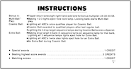

PinballY tries to make installation mostly automatic, but there are a few details that you might have to take care of manually, involving interactions with other, third-party programs. The PinballY Setup program is intentionally designed not to make any changes to any other programs on your system, since that's the source of so many problems in other installers, but the trade-off is that you might have to perform a few manual steps after installing.
PinballY requires Windows 7 or later. It won't work on Vista or XP.
If you're running Windows 7, it might be necessary to upgrade to the latest Microsoft DirectX components. This will be necessary if PinballY shows an error box complaining about missing DirectX components when you try to run it. Update instructions can be found on the Microsoft website:
If you have Windows 8 or later, all necessary DirectX components are built into the operating system.
 If you want to be able to use .swf files for scanned pinball instruction card images, the Adobe Flash Player ActiveX control (also known as the Flash plug-in for Internet Explorer) must be installed on your system. PinballY doesn't need Flash for anything else, so you only have to install Flash if you want to be able to display .swf instruction card images. If you already have the Flash Player ActiveX installed, no additional setup should be needed for this.
See Flash Player for more details.
If you're using PinVol, you should update to version 1.2 (July 2018) or later. PinVol added recognition for PinballY in that version to make the two programs work better together.
If you're using DOF for feedback devices in your pin cab, a few extra steps might be required.
If you're using a real DMD (dot matrix display) device, such as a PinDMD or Pin2DMD, you might need to update your copy of DmdDevice.dll (the system component that accesses the DMD device).
DmdDevice.dll is normally installed as part of your Visual Pinball setup. If you used the VP installer, it should have placed a copy of DmdDevice.dll in VP's VPinMAME subfolder. That might be an older version, though. For best results, make sure you're using one of the following:
Version 1.7.2 (even my patched 1.7.2) has a known bug that prevents it from working with ROM colorizations, so some people are still using my 1.7.1 patch for the time being, until that bug is fixed in the official release branch.
If you're not sure which version you have installed, open the file properties (from the Windows desktop) for the file DmdDevice.dll, normally found in your Visual Pinball\VPinMAME folder. Check the Product Version under the Details tab as shown at right.
The 64-bit version of PinballY requires the 64-bit version of DmdDevice.dll. It's safe to install both the 32-bit and 64-bit versions of the DLL at the same time. The trick is to make sure the 64-bit version is named DmdDevice64.dll, so that it can coexist with the regular 32-bit DmdDevice.dll without creating a file naming conflict.